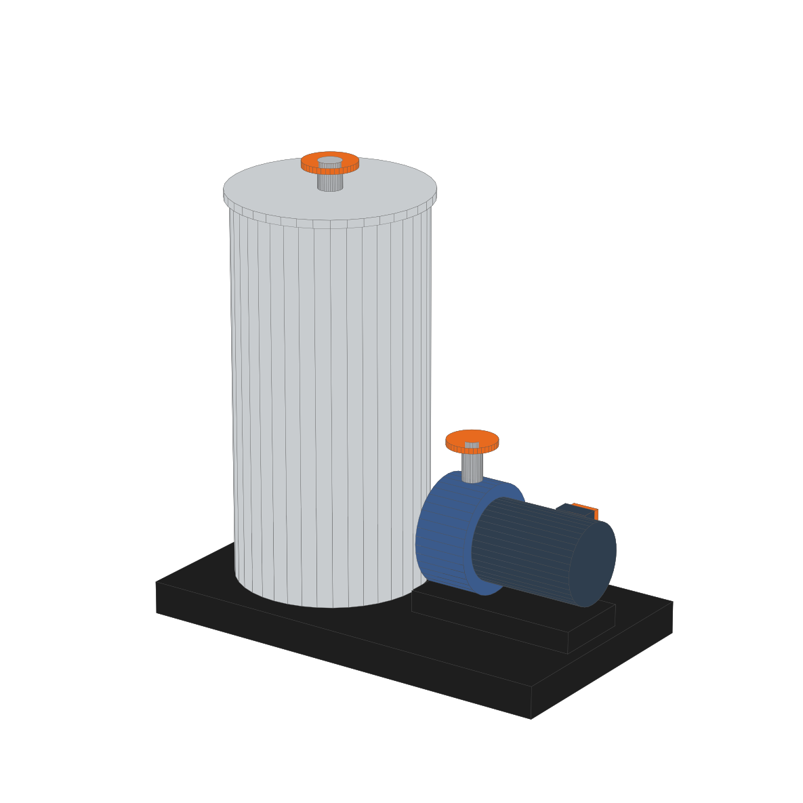

De tu dibujo a una familia lista para el proyecto, con geometría, bridas, conexiones MEP y parámetros. Llenas un Excel y Dynamo hace el resto, sin programar.
No necesitas saber programar ni modelar en el editor de familias. Lees las medidas en tu dibujo, las escribes en un Excel y un gráfico de Dynamo genera la familia.
Abre el panel de adjuntos de tu lector (icono de clip):
Todo se mide desde un mismo punto: el origen. Si tus dibujos y tu Excel usan el mismo origen, la familia queda exactamente sobre tus planos.
Toda pieza es una caja o un cilindro. Para cada una anota de dónde a dónde va: en X y en Y desde la planta, y en Z desde el alzado.
| Pieza | Forma | Eje | X desde | X hasta | Y desde | Y hasta | Z desde | Z hasta | Grupo | Material |
|---|---|---|---|---|---|---|---|---|---|---|
| Base | Caja | 0 | 1600 | 0 | 900 | 0 | 120 | Estructura | Acero negro | |
| Tanque | Cilindro | Z | 100 | 800 | 100 | 800 | 120 | 1520 | Cuerpo | Acero inox. |
| Motor | Cilindro | X | 1150 | 1550 | 300 | 600 | 250 | 550 | Motor | Motor |
Cuerpo, Motor, Estructura… Se vuelve subcategoría: sirve para filtros y para apagar partes en una vista.
Se crea solo y queda como parámetro Mat_Acero_negro para cambiarlo después.
Medio y fino para piezas pequeñas: se ocultan en nivel Bajo y las vistas generales quedan livianas.
Por cada tubo, ducto o acometida eléctrica, anota un punto y una dirección. El punto es el centro de la cara de la brida, donde llega el tubo de la obra.
| Conexión | Tipo | X | Y | Z | Dirección | Diámetro | Largo | Brida | Sistema | Flujo |
|---|---|---|---|---|---|---|---|---|---|---|
| Llenado | Tubería | 450 | 450 | 1650 | +Z | 80 | 100 | Si | Agua fría | Entra |
| Descarga | Tubería | 1050 | 450 | 750 | +Z | 65 | 150 | Si | Otro | Sale |
| Drenaje | Tubería | 450 | 0 | 250 | −Y | 50 | 100 | No | Sanitario | Sale |
| Motor | Eléctrico | 1360 | 700 | 440 | +Y | 460 V · 7.5 kW (columnas Tension_V y Potencia_kW) | ||||
Forma Rectangular con Ancho y Alto, o Redonda con Diámetro. Sirve también para chutes y tolvas de producto: así se conectan como ductos en el proyecto.
Una sola regla que funciona en cualquier oficina, idioma o proyecto. Si todos los nombres siguen la misma forma, las tablas, etiquetas y filtros funcionan con todas tus familias.
El prefijo lo eliges una vez en la hoja 1_Familia (EQ, tus iniciales o el código de tu oficina).
| Regla | Bien | Mal |
|---|---|---|
| Sin espacios, tildes, eñes ni símbolos | EQ_Tension_Nominal | EQ Tensión nominal |
| Palabras con mayúscula inicial, unidas por _ | EQ_Caudal_Diseno | eq_caudaldiseño |
| Unidad al final solo si el tipo no la trae (Número o Texto) | EQ_Peso_kg · EQ_Alto | EQ_kg_Peso · EQ_Alto_mm |
| Sí/No con Mostrar_ o Es_ | EQ_Mostrar_Zona_Servicio | EQ_Zona |
| Un concepto, un nombre: no inventes sinónimos | EQ_Largo (siempre) | Largo / Longitud / L |
Instancia si cambia en cada equipo colocado: EQ_Codigo, EQ_Sistema.
Tipo si es del modelo: EQ_Peso_kg, EQ_Capacidad_m3h.
Cada conexión crea los suyos con la misma regla:
EQ_Llenado_DN · EQ_Llenado_Largo
EQ_Motor_Tension · EQ_Motor_Carga_VA
Abre Dynamo desde tu proyecto, abre ADLB_Generar_Familia.dyn, elige el Excel y la carpeta. Deja SOLO VALIDAR = True, pon EJECUTAR = True y pulsa Ejecutar.
Cuando el registro diga 0 errores, cambia SOLO VALIDAR a False y ejecuta otra vez. La familia se guarda en tu carpeta y se carga en el proyecto.
¿Algo no quedó bien? Corrige el Excel y vuelve a generar. La familia se sobrescribe; nunca la editas a mano.
FAMILIA GENERADA con 0 errores C:\Familias\ADLB_Equipo_Bombeo_Tanque.rfa OK categoria Equipos mecanicos, tipo "Tanque 500 L + bomba 7.5 kW", 4 grupos, 4 materiales OK 7 piezas OK conexion Llenado (Tuberia con brida, 8 pernos) OK conexion electrica Motor (460 V, 7.5 kW) OK cargada en el proyecto: ADLB_Equipo_Bombeo_Tanque
| Si ves… | Haz esto |
|---|---|
| “Dynamo no señala al documento actual” | Vuelve a una vista del proyecto desde el que abriste Dynamo; cierra las familias abiertas. |
| ERROR 2_Piezas fila 5 … | Ve a esa fila del Excel: casi siempre es un “hasta” menor que su “desde”. |
| No se encontró plantilla .rft | Escribe la ruta de una plantilla en 1_Familia › Plantilla_RFT. |
El equipo de ejemplo del Excel: 7 piezas, 3 boquillas y una acometida eléctrica.
No edites la familia a mano. Edita el Excel y vuelve a generar. Así cada cambio queda registrado y la siguiente familia sale en minutos.
Empieza con el ejemplo: genera la familia tal cual viene, mírala en 3D y luego cambia una medida en el Excel. Cuando veas que se actualiza sola, cambia el ejemplo por tu equipo.